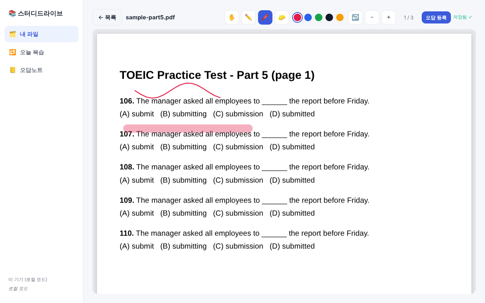
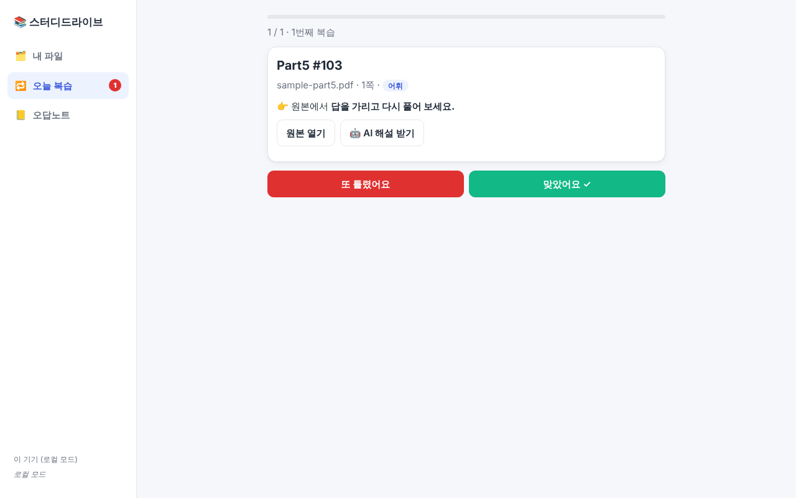
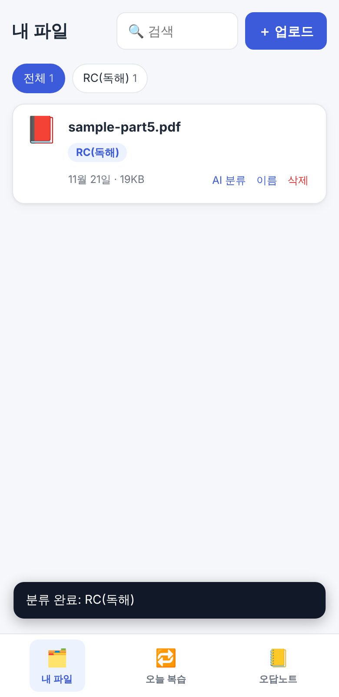

| 기기 간 동기화 | 로그인만 하면 태블릿·폰·PC에서 같은 파일과 필기가 즉시 보인다. 웹앱(PWA)이라 설치 없이 열고, 홈 화면에 추가해 앱처럼 쓸 수 있다. |
|---|---|
| 다운로드 없이 열람·편집 | PDF·이미지·메모(txt/md)를 브라우저에서 바로 열고, 펜·형광펜·지우개·되돌리기로 필기하면 자동 저장된다. 확대/축소, 쪽 이동 지원. |
| AI 자동 정리 | 파일을 올리면 AI가 본문(스캔본은 첫 쪽 이미지)을 읽어 카테고리·태그·한 줄 요약을 붙인다. 카테고리별 보기·검색 가능. |
| 오답 등록 → AI 해설 | 뷰어에서 한 번에 오답 등록(문제 번호·틀린 이유·메모). AI가 문제 이미지를 읽고 해석, 정답 근거, 틀린 이유, 풀이 요령, 유사 문제 2개를 생성한다. |
| 간격 복습 | 1·3·7·14일 주기로 “오늘 복습” 목록을 자동 구성. 맞히면 다음 단계, 틀리면 처음부터, 14일 단계까지 통과하면 졸업. |
| AI 약점 분석 | 쌓인 오답의 원인 분포(어휘·문법·듣기 놓침 등)를 시각화하고, AI가 약점 진단과 이번 주 학습 계획을 제안한다. |



※ 사용 기술: HTML/JS 웹앱(PWA), Supabase(인증·DB·파일 저장소), Anthropic Claude API(서버 함수 경유). 데모 자료는 직접 제작한 샘플이며, 상용 교재는 포함하지 않았다.